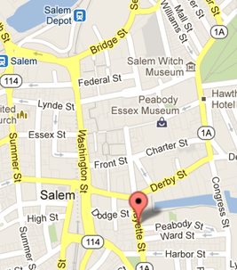

About NSHappyHour
NSHappyHour is an informal gathering of Mac and iOS developers in the Boston North Shore. We meet on the first Wednesday of each month in Salem MA. The gathering give you a chance to show off your apps, seek help or assist others, and most importantly meet and get to know other fine folks in the development community.
NSHappyHour is open to all, developers, designers, and anyone else interested in iOS and Mac OS X software.
Location
Red Lulu Cocina & Tequila Bar
94 Lafayette Street
Salem, MA 01970
